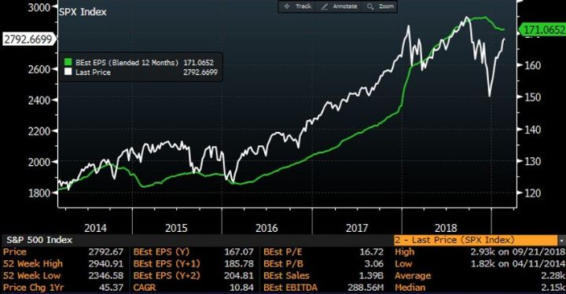
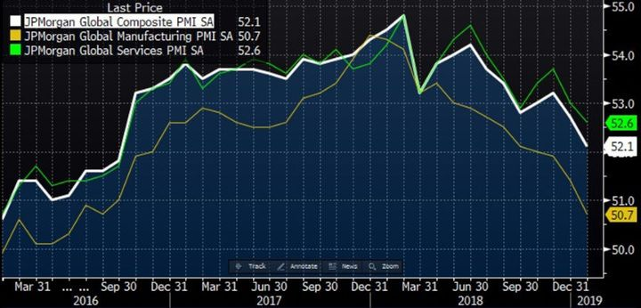
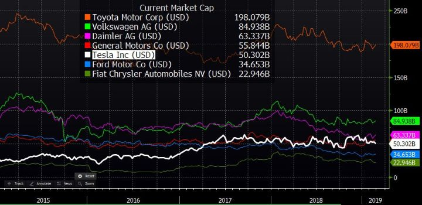
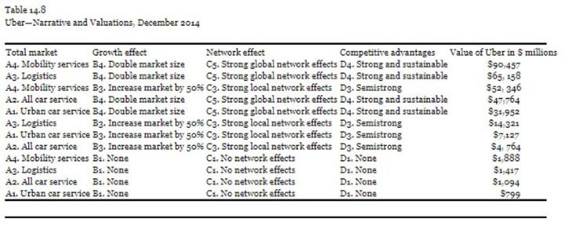

Ymmärrä tarinoita, ymmärrä markkinoita
Tell me the facts and I’ll learn. Tell me the truth and I’ll believe. But tell me a story and it will live in heart forever.” – vanha Amerikan intiaanien sananlasku
Yuval Noah Harari kirjoittaa kirjassaan Sapiens, kuinka raha on tehokkain ihmisen luoma luottamuksen järjestelmä. Rahan rooli vaihdannan välineenä ja arvon säilyttäjänä perustuu ihmisten keskinäiseen uskoon sen kyseisistä ominaisuuksista.
Samaan yhteiseen uskomukseen perustuvat valtiot, joissa elämme, yhtiöt, joita omistamme ja jumalat, joita palvomme. Valtio nimeltä Suomi ei ole luonnossa syntynyt kokonaisuus. Se on ihmisen mielikuvituksessa kehittynyt ilmiö, joka on olemassa vain koska uskomme niin.
Uskomukset perustuvat tarinoihin, joita ihminen on kognitiivisen vallankumouksen jälkeen oppinut kertomaan itselleen ja muille kaltaisilleen. Niiden ansiosta ihminen on noussut maapallon hallitsevaksi eläimeksi. Tarinat ovat saaneet ihmismassat uskomaan yhteiseen asiaan ja toimimaan yhdessä tuon asian puolesta.
Tarinoiden avuilla selitämme maailmaa, joka sittemmin teollisen ja internetin vallankumouksien myötä on globaalistunut entistä monimutkaisemmaksi systeemiksi. Tarinoilla selitämme keitä olemme, mistä olemme tulleet ja mihin olemme menossa.
Myös rahoitusmarkkinat mitä enemmissä määrin elävät tarinoista. Niillä luodaan markkinoiden odotukset, jotka heijastuvat kunakin hetkenä markkina-arvoksi. Siksi tarinoiden ymmärtäminen on tärkeää.
Professori Robert J. Shillerin mukaan tarinat ja kertomukset eli narratiivit ovat kulkutaudinomaisesti leviäviä tarttuvia tauteja. Ne kehittyvät usein rinnakkain jonkin teeman ympärillä ja vaikuttavat ihmisten käyttäytymiseen sekä lopulta kulttuuriin, poliittiseen päätöksentekoon ja talouteen. Shiller puhuu narratiivien taloustieteestä.
Finanssikriisin jälkeen vuosia spekuloitiin romahtavatko markkinat, kun korkoja pitkän rahapoliittisen elvytyksen jälkeen lopulta lähdetään nostamaan. Yhdysvaltojen keskuspankki Fed aloitti koronnostot vuonna 2015 (maltillisesti kylläkin, sillä reaalinen korko on vasta nyt vaivoin plussalla). Vuonna 2016 olivat Brexit ja Trump. Maailman talous ja markkinat jatkoivat nousuaan.
Samalla rakentui muitakin narratiiveja. Vuosina 2017-18 tarina oli globaalin talouden synkronoidusta kasvusta ensimmäistä kertaa sitten finanssikriisin. Trumpin verohelpotus yrityksille oli myös pönkittänyt yhdysvaltalaisten yhtiöiden tulosennusteita.
Sitten viime syksynä Fedin koronnostot muodostuivat yleisessä narratiivissa yhtäkkiä ongelmaksi. Samaan aikaan globaalin talouden kasvutahti oli alkanut hiipumaan. Kiinan hidastuminen. Kauppasotasekoilut. Farssi nimeltä Brexit. Populistien valtaannousu Italiassa. Lähestyvät Eurovaalit.
Oliko nyt käsillä se pitkään pelätty todellinen markkinan korjaus? Olihan finanssikriisistäkin jo yli kymmenen vuotta. Markkinat tulivatkin alas 20%. Mutta sitten tapahtui äkillinen käänne parempaan ja markkinat nousivat lähes saman verran ylös.
Mikä muuttui? Sentimentti. Mikä sen muutti? Narratiivit.
Markkinan hermoilu sai Fedin muuttamaan viestinsä tulevasta rahapolitiikastaan aggressiivisesta varovaiseksi vain muutamassa kuukaudessa, juuri sopivasti markkinaa tukemaan. Pahimmat pelot yllämainituista riskeistä eivät myöskään realisoituneet.
Enää ei kauppasota huoleta. Nyt tarina on, että Trump haluaa sopimuksen ja Kiina puolestaan tarvitsee sopimuksen, joten eiköhän sellainen saada aikaan. Brexit-neuvotteluista on tullut lähinnä viihdyttävä show, jolle naureskellaan.
Tarinat muuttivat sentimenttiä, joka vaikutti markkinaan, joka vaikutti poliittisiin päättäjiin, joka vaikutti taas tarinoihin, sentimenttiin ja jälleen markkinaan. Tarinat ja markkinat ovat jatkuvassa vuorovaikutuksessa toisiinsa.
Mikä on seuraava narratiivi? Kurssinousun myötä aikaisemmat huolet ovat, jos eivät täysin pois mielistä, ainakin osittain hinnoittelemattomia riskejä. Edelleen kuitenkin globaalin talouden indikaattorit ovat laskusuuntaisia.


Uutisvirta ja tarinat vaikuttavat sijoittajien näkemyksiin myös yksittäisten yhtiöiden valuaatioista. Pankkien ja analyysitalojen analyytikot ovat muodostaneet omat visionsa eri yhtiöiden tulevaisuuden näkymistä. Samoin sijoittajilla itsellään ovat omat tarinansa. Näiden kollektiivisena lopputuloksena kullekin yhtiölle muodostuu kunakin hetkenä markkina-arvo.
Se, mikä tuo arvo on suhteessa tämän hetken tuloskuntoon, on pitkälti yhdentekevää. Osake voi olla suhteessa omaan historiaansa tai muihin verrokkeihinsa nähden halpa tai kallis. Ratkaisevaa ovat odotukset. Ja ne rakentuvat narratiivien synnyttäminä.
Kirjassaan Narrative and Numbers: The Value of Stories in Business, erityisesti yhtiöiden arvostuksien analysointiin perehtynyt professori Aswath Damodaran esittää, että yleisen datan paljouden ironinen seuraus olisi se, että ihmisten päätöksenteosta on tullut entistä yksinkertaisempaa. Ihmiset eivät luota numeropaljouteen ja ovat siksi entistä taipuvaisempia nojaamaan tarinoihin. Tarinat ovat ymmärrettävämpiä.
Damodaranin mukaan hyvällä tarinankerronnalla on merkittävä osuus yrityksen menestykseen, etenkin sen alkutaipaleella. Mitä lyhyempi yhtiön oma historia, sitä enemmän sen olemassaolo nojaa tulevaisuudesta maalattuun kuvaan. Hyvä sijoitustarina auttaa yhtiötä keräämään pääomia helpommin ja yhtiölle (sekä omistajille) suotuisammin ehdoin. Se myös auttaa yhtiötä houkuttelemaan päteviä työntekijöitä. Ennen kaikkea hyvä tarinankerronta siivittää yhtiön arvostusta.
Narratiivit selittävät, miksi Teslan markkina-arvo on ollut jopa kolmanneksi suurin isoista autovalmistajista (kuten oli tilanne loppuvuodesta, sittemmin Daimler ja GM ovat nousseet Teslan ohi).

Tesla valmistaa vain murto-osan siitä automäärästä, jota muut yhtiöt valmistavat. Sen liikevaihto viime vuonna oli reilut 21 miljardia dollaria kun vertailussa olevien muiden autovalmistajien liikevaihto on 135-265 mrd. Tätä arvostuseroa ei selitä mikään muu kuin sijoittajien malleihinsa rakentama visio Teslan positiivisesta tulevaisuudesta.
Sen sijoitustarinassa Teslaa ei pidetä autovalmistajana vaan ”Mobility-as-a-Service” -yhtiönä. Yhtiön autot keräävät matkoistaan dataa, joka mahdollistaisi Teslan voittavan itseohjautuvien autojen kilpailun ja muodostavan oman Uberin kaltaisen kuljetusverkoston. Yksi tällaiseen visioon perustuva narratiivi ennustaa yhtiön markkina-arvon vielä yli kymmenkertaistuvan.
Uberin puolestaan ennustetaan korvaavan ei pelkästään taksipalvelut vaan lähestulkoon koko yksityisautoilun ja ison osan logistiikkateollisuudestakin. Damodaranin eri narratiiveihin perustuvat arvomallit antoivat vuonna 2014 Uberille arvoksi niinkin kapean hintahaitarin kuin 1 – 90 miljardia dollaria. (Sittemmin nuo hänen arvionsa ovat voineet muuttua.)

Eli riippuen siitä, mihin haluaa uskoa, saa mallista ulos tarinaa tukevan arvon. Tämä on hyvä pitää mielessä, kun lukee analyytikoiden arvioita yhtiöiden arvostuksista. Monet tulevaisuuden skenaarioista ovat mahdollisia, vain osa todennäköisiä.
Suomessa hyvä esimerkki tarinaosakkeesta on Neste. Vielä 6-7 vuotta sitten yhtiön päätökselle rakentaa uusiutuvan biodieselin jalostuslaitokset Singaporeen ja Rotterdamiin naureskeltiin. Niistä ei koskaan tulisi mitään. Alkuvaiheessa tehtaiden aloituskustannusten ylitykset rokottivatkin yhtiön tulosta.
Sitten kaikki muuttui ja Nesteen uusiutuvat tuotteet alkoivat tekemään tulosta. Ja sitten jalostusputkista alkoi suorastaan satamaan hunajaa. Tänä päivänä yhtiö tekee järkyttävän kovaa tulosta käsittämättömän kovalla jalostusmarginaalilla. Raaka-aineena käytetty palmuöljy on halpaa, mutta silti biodieselin ostajat haluavat tuotetta hinnalla millä hyvänsä.
Narratiivi on kääntynyt 180 astetta. Nyt yhtiölle kaavaillaan hallitsevaa markkina-asemaa myös tulevaisuuden lentoliikenteen päästöjen vähentämisessä. Mutta mikä on tarinan seuraava vaihe?
Jos historia on jotain osoittanut, niin vapaassa taloudessa pääoma virtaa sinne, missä sille saadaan paras tuotto. Nesteen sijoitetun pääoman tuotto on yli 20%, kun jalostajat perinteisesti ovat pystyneet vain alle 10% tuottoon.
Moinen mahdollisuus voi houkutella kilpailijoita. Niin on perinteisesti käynyt. Mikä olisi Nesteen asema tuolloin? Onko kysynnän kasvuajurit niin merkittävät, että kaikille riittää jaettavaa? Miten regulaatio vaikuttaa raaka-aineen saantiin tai asiakkaille asetettuihin päästörajoitusvelvoitteihin?
Kukin tehköön omat johtopäätöksensä. Minulla on omat epäilykseni.
Ja sehän onkin sijoittamisen juju: tehdään valistuneita arvauksia eri tulevaisuuden skenaarioista, annetaan niiden toteutumisille todennäköisyydet, ja diskontataan tuo odotusarvo nykyhetkeen jollain järkevällä tuottovaateella. Jos nykyarvoksi tulee korkeampi kuin vallitseva markkina-arvo, ostetaan osaketta. Jos ei, niin myydään.
Haaste tulee siinä, että matkalla joudutaan tekemään useita oletuksia. Ne ovat kaikki parhaimmillaankin vain arvauksia. Lisäksi ne kaikki muuttuvat yli ajan, kun uutisvirta, narratiivit, sentimentti ja maailma muuttuvat.
Katsoo markkinaa sitten ylhäältä alas, tai alhaalta ylös, ajavat sitä narratiivit. Niiden ymmärtäminen – tai ainakin ymmärtämisen yrittäminen – on kaiken aa ja oo. Eikä pelkästään sen narratiivin, mitä vallitseva markkina hinnoittelee. On pyrittävä ennakoimaan, mitkä ovat ne uudet narratiivit, jotka tulevat ohjaamaan markkinaa jatkossa.
Ei sijoittamista helpoksi ole tehty. Charlie Mungerin sanoin:
“It’s not supposed to be easy. Anyone who finds it easy is stupid.”
Disclaimer:
Kolumnit sisältävät mielipiteitä ja mahdollisesti tietoa omista sijoituksistamme, jotka voivat vaihdella päivästä toiseen. Mitään, mitä kirjoitamme ei tule ottaa sijoitussuosituksena. Kuten teksteissämme painotamme, päätökset kannattaa aina tehdä itse. Lukija vastaa itse voitoistaan ja tappioistaan.